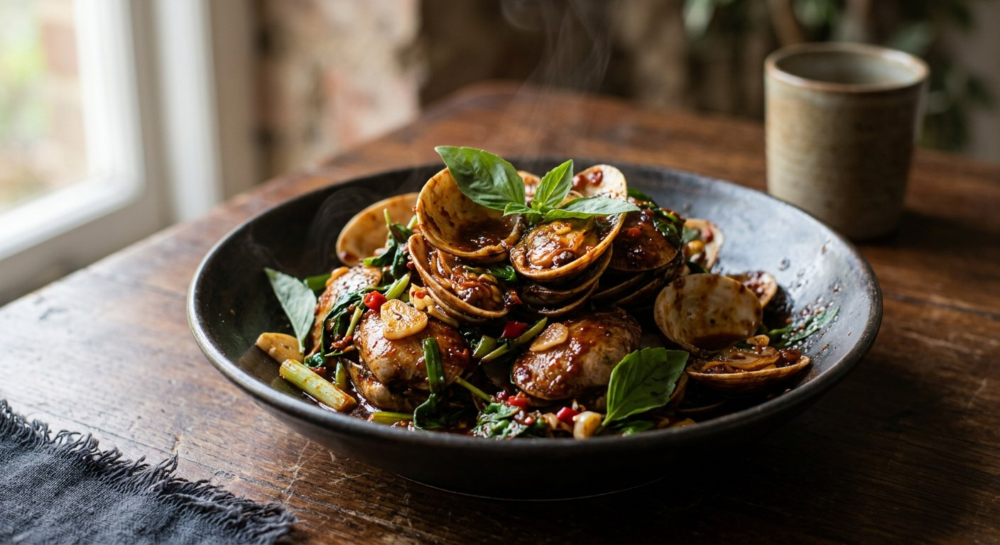

Short-neck clams hit a screaming wok with a spoonful of nam prik pao — the sweet, smoky, faintly caramelised chilli jam that carries salt, sugar and heat in one spoon — and finish under a handful of Thai basil.

หอยลายผัดน้ำพริกเผา breaks into three parts: หอยลาย, the small short-neck clams dredged daily from Gulf of Thailand mudflats; ผัด, the quick hot stir-fry; and น้ำพริกเผา, the roasted chilli jam that is the whole point of the dish. Dried chillies, shallots, garlic and shrimp paste are roasted and pounded, then cooked down with palm sugar and fish sauce until they become a dark, glossy, slightly sweet jam. One spoonful of it is a finished seasoning — every Thai source treats it that way, and warns you to add almost nothing else.
The dish is seafood-shack food grown big. Pim, of the long-running home-kitchen blog ครัวบ้านพิม, tells the origin story properly: her family's everyday version was just clams fried with garlic, fish sauce, a pinch of sugar and basil — until, aged seventeen, she was taken to a khao tom (rice-soup) restaurant in Samre, Thonburi, and tasted the version that adds the jam. She has never gone back, and her recipe is an instruction in restraint: buy a non-sweet nam prik pao, because the jam is already the seasoning.
The wok work itself is barely five minutes. Every source agrees on the shape of it: aromatics first, jam second, clams third, basil last — and off the heat the moment the shells open. As Chua Hah Seng, the prik pao maker whose own recipe sits below, puts it: the clams do half the cooking themselves, sweating out their liquor the moment they hit the hot pan.
| Thai | English | Amount |
|---|---|---|
| หอยลาย | Short-neck clams, large | 500 g |
| กระเทียมไทย | Thai garlic, pounded with the chillies | 1 tbsp |
| พริกขี้หนูสวน | Bird's eye chillies | 15 |
| เกลือสมุทร | Sea salt | ¼ tsp |
| น้ำมันพืช | Vegetable oil | 3 tbsp |
| น้ำพริกเผา | Nam prik pao (roasted chilli jam) | 2 tbsp |
| น้ำตาลทราย | Sugar | 1 tsp |
| น้ำมันหอย | Oyster sauce | 3 tbsp |
| โหระพา | Thai sweet basil leaves, picked | 1 cup |
The blanched-clam pot (Wongnai, by ครัวอ๊กนี): 1 kg clams briefly scalded in boiling water first ("สะดุ้ง" — just startled, not cooked), 3 tbsp Maepranom nam prik pao plus 1 tbsp of the hot noodle-stall type, 5 garlic cloves, 5 bird's eye chillies, oyster sauce, sugar and fish sauce — and her tip: go easy on the sugar, most nam prik pao is already sweet. The minimalist pot (Phol Food Mafia): no oyster sauce at all — pounded chillies and garlic, 2 tbsp jam, 4 tbsp water, 1 tbsp fish sauce, clams covered for two minutes, finished with basil and garnished with sliced red chilli and spring onion. The home-kitchen pot (Pim): 2 tbsp jam plus 1½ tbsp of the oil it comes in, non-sweet paste only, soy and oyster sauce, ½ cup water — and her fussy trick of prising each shell open with a paring knife to check for sand before cooking.
To blanch or not to blanch. Wongnai's ครัวอ๊กนี, TrueID and Sheepola scald the clams in boiling water first — Wongnai only briefly ("สะดุ้ง", just startled), TrueID until cooked through, Sheepola 30–40 seconds with a cold-water shock. Phol, Chua Hah Seng and Pim put the raw clams straight into the hot wok; Chua Hah Seng notes that the clams' own water comes out during the fry and becomes the sauce. The blanching camp gets a cleaner, drier wok; the raw camp gets more clam flavour in the sauce.
Oyster sauce or not. Chua Hah Seng uses a full 3 tbsp, TrueID and Pim 2½, Sheepola 1. Phol Food Mafia skips it entirely and seasons with fish sauce alone — his is the cleanest version, the jam carrying the dish by itself. Wongnai's ครัวอ๊กนี sits in the middle with a small amount alongside fish sauce.
Water in the wok. Phol adds 4 tbsp, TrueID and Pim half a cup, Wongnai "a little". Chua Hah Seng and Sheepola add none — the clam liquor (or the blanching) supplies the liquid. The more water, the saucier the plate; the Thai baseline is a coating, not a pool.
The sugar question. Nobody sweetens much. TrueID says skip the sugar entirely if your jam is already sweet; Wongnai's tip is the same — most nam prik pao is sweet already; Pim solves it at the jar, insisting on a non-sweet paste. Only a pinch or a teaspoon ever goes in, and it is there to round off the roast, not to sweeten.
This recipe is translated from the following Thai-language sources. Where they disagree, we've said so.
1. Chua Hah Seng (the nam prik pao maker) — "หอยลายผัดพริกเผา" (the recipe used here) — chuahahseng.com
2. Wongnai — "หอยลายผัดน้ำพริกเผา" by ครัวอ๊กนี (the blanched-clam version; 582.9k reads) — wongnai.com
3. Phol Food Mafia — "ผัดหอยลายผัดน้ำพริกเผา" by พล ตัณฑเสถียร (Phol Tantasathien; the minimalist fish-sauce version) — pholfoodmafia.com
4. Pim @ ครัวบ้านพิม — "หอยลายผัดน้ำพริกเผา" (the home-kitchen original; the Samre khao tom story; the non-sweet paste rule) — pim.in.th
5. TrueID Food — "สูตรทำ หอยลายผัดน้ำพริกเผา อร่อยจัดจ้าน หมดจานไม่รู้ตัว" by MEEKAO (blanch-until-cooked version) — food.trueid.net
6. Sheepola Kitchen — "หอยลายผัดน้ำพริกเผา" (the cold-shock blanch version) — sheepola.co.th